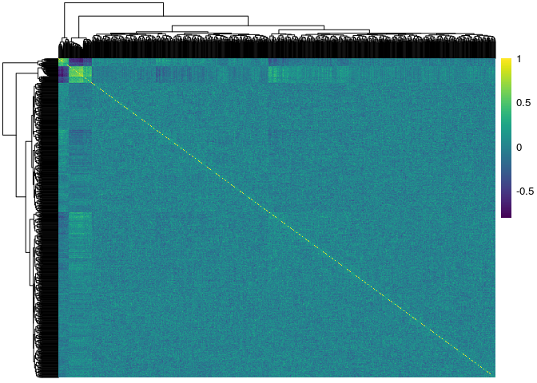
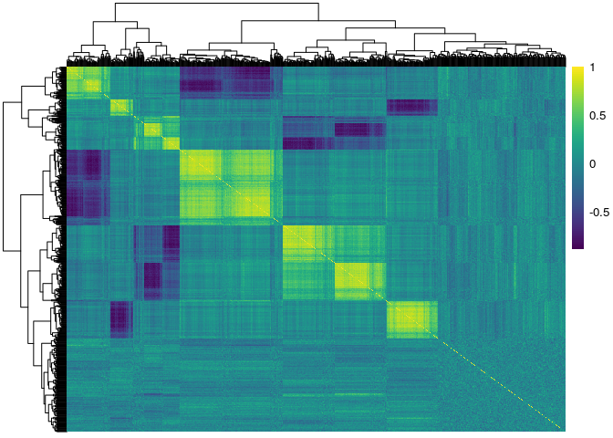

Simulation functions (s_)¶
The s_ functions were used to conduct the simulation studies in the
Bhatnagar et.al (2017+). The s_modules, s_generate_data and
s_generate_data_mars are the main functions to generate the simulated
data.
In the paper we designed 6 simulation scenarios that are constructed to illustrate different kinds of relationships between the variables and the response. For all scenarios, we have created high dimensional data sets with \( p \) predictors, and sample sizes of \( n \). We also assume that we have two data sets for each simulation - a training data set where the parameters are estimated, and a testing data set where prediction performance is evaluated, each of equal size \( n_{train} = n_{test} \). The number of subjects who were exposed (\( n_{E=1}=100 \)) and unexposed (\( n_{E=0}=100 \)) and the number of truly associated parameters (\( 0.10 * p \)) remain fixed across the 6 simulation scenarios.
Let
where \( Y ^ * \) is the linear predictor, the error term \( \varepsilon \) is generated from a standard normal distribution, and \( k \) is chosen such that the signal-to-noise ratio is 0.2, 1 and 2 (e.g. the variance of the response variable \( Y \) due to \( \varepsilon \) is \( 1/SNR \) of the variance of \( Y \) due to \( Y^* \)).
The Design Matrix¶
We generate covariate data in 5 blocks using the s_modules function
which is a wrapper of the simulateDatExpr function from the WGCNA
package in R (version 1.51). This generates data from a latent vector:
first a seed vector is simulated, then covariates are generated with
varying degree of correlation with the seed vector in a given block.
For the unexposed observations (\( E=0 \)), only the predictors in the yellow block were simulated with correlation, while all other covariates were independent within and between blocks. For the exposed observations (\( E=1 \)), all 5 blocks contained predictors that are correlated.
For simplicity, we will refer to the simulated data as gene expression
data, with each column of the design matrix being a gene. First we
generate gene expression data for \( p=1000 \) genes, independently
for the 100 unexposed (d0) and 100 exposed (d1) subjects using the
s_modules function. The exposed subjects are meant to have correlated
genes while the unexposed subject don't. The modProportions argument
is a numeric vector with length equal the number of modules you want to
generate plus one, containing fractions of the total number of genes to
be put into each of the modules and into the "grey module", which means
genes not related to any of the modules. In the following examples we
generate 5 modules of equal size (15% of \( p \) each module) plus 1
"grey" module (25% of \( p \))
pacman::p_load(eclust) d0 <- s_modules(n = 100, p = 1000, rho = 0, exposed = FALSE, modProportions = c(0.15,0.15,0.15,0.15,0.15,0.25), minCor = 0.01, maxCor = 1, corPower = 1, propNegativeCor = 0.3, backgroundNoise = 0.5, signed = FALSE, leaveOut = 1:4)
## ## simulateDatExpr: simulating 1000 genes in 5 modules.
d1 <- s_modules(n = 100, p = 1000, rho = 0.9, exposed = TRUE, modProportions = c(0.15,0.15,0.15,0.15,0.15,0.25), minCor = 0.4, maxCor = 1, corPower = 0.3, propNegativeCor = 0.3, backgroundNoise = 0.5, signed = FALSE)
## simulateDatExpr: simulating 1000 genes in 5 modules.
# get the true cluster labels truemodule1 <- d1$setLabels table(truemodule1)
## truemodule1 ## 0 1 2 3 4 5 ## 250 150 150 150 150 150
Next we create the design matrix and label it. Note that the rows are the subjects and the columns are the genes. The first 100 rows correspond to the unexposed subjects, and the next 100 subjects correspond to the exposed subjects:
pacman::p_load(magrittr) X <- rbind(d0$datExpr, d1$datExpr) %>% magrittr::set_colnames(paste0("Gene", 1:1000)) %>% magrittr::set_rownames(paste0("Subject",1:200))
Here we used the pheatmap and viridis packages to show the
correlation matrices of the genes stratified by exposure status. The
first figure corresponds to the unexposed \( (E=0) \) subjects, and
the second figure corresponds to the exposed \( (E=1) \) subjects:
pacman::p_load(pheatmap) pacman::p_load(viridis) pheatmap::pheatmap(cor(X[1:100,]), show_rownames = F, show_colnames = F, color = viridis(100)) pheatmap::pheatmap(cor(X[101:200,]), show_rownames = F, show_colnames = F, color = viridis(100))

The response¶
The first three simulation scenarios differ in how the linear predictor \( Y^* \) is defined, and also in the choice of regression model used to fit the data. In simulations 1 and 2 we use lasso (Tibshirani 1996) and elasticnet (Zou 2005) to fit linear models; then we use MARS (Friedman 1991) in simulation 3 to estimate non-linear effects. Simulations 4, 5 and 6 use the GLM version of these models, respectively, since the responses are binary.
Linear Relationship¶
For simulations 1 and 2 we used the s_generate_data function to
generate linear relationships beteween the response and genes, of the
form:
where \( \beta_j \sim \textrm{Unif}\left[ 0.9,1.1\right] \) and \( \beta_E = 2 \). That is, only the first 50 predictors of both the red and green blocks are active. In this setting, only the main effects model is being fit to the simulated data.
We used the s_generate_data with the include_interaction = TRUE
argument to generate responses of the form:
where In this setting, both the main effects and their interactions with E are being fit to the simulated data.
In this example we generate a response which depends on both the main effects and their interactions with E. We first generate the true \( \beta \) vector:
betaMainEffect <- vector("double", length = 1000) betaMainInteractions <- vector("double", length = 1000) # the first 25 in the 3rd block are active betaMainEffect[which(truemodule1 %in% 3)[1:50]] <- runif(50, 0.9, 1.1) # the first 25 in the 4th block are active betaMainEffect[which(truemodule1 %in% 4)[1:50]] <- runif(50, 0.9, 1.1) # the interaction effects betaMainInteractions[which(betaMainEffect!=0)] <- runif(50, 0.4, 0.6) # the environment effect betaE <- 2 # the total beta vector beta <- c(betaMainEffect, betaE, betaMainInteractions)
Next we run the s_generate_data function to get the necessary results
for the analysis step of the simulation study. This function creates a
training and a test set of equal size by evenly divinding the subjects
such that there are an equal number of exposed and unexposed in both
training and test sets.
There are several choices to make here, but these are the most important arguments:
cluster_distance: How should the genes, ignoring the exposure status of the individuals, be clustered? We choose the \( TOM \) matrix based on all subjects.eclust_distance: How should the genes, accounting for the exposure status of the individuals, be clustered? We choose the difference of the exposure sensitive TOM matrices: \( TOM(X_{\textrm{diff}}) = |TOM_{E=1} - TOM_{E=0}| \)cut_method: How should the number of clusters be determined? We choose thedynamicTreeCut::cutreeDynamic()algorithm which automatically selects the number of clusters.
result <- s_generate_data(p = 1000, X = X, beta = beta, include_interaction = TRUE, cluster_distance = "tom", n = 200, n0 = 100, eclust_distance = "difftom", signal_to_noise_ratio = 1, distance_method = "euclidean", cluster_method = "hclust", cut_method = "dynamic", agglomeration_method = "average", nPC = 1)
## Creating data and simulating response ## Calculating similarity matrices ## TOM calculation: adjacency.. ## adjacency: replaceMissing: 0 ## ..will not use multithreading. ## Fraction of slow calculations: 0.000000 ## ..connectivity.. ## ..matrix multiplication.. ## ..normalization.. ## ..done. ## TOM calculation: adjacency.. ## adjacency: replaceMissing: 0 ## ..will not use multithreading. ## Fraction of slow calculations: 0.000000 ## ..connectivity.. ## ..matrix multiplication.. ## ..normalization.. ## ..done. ## TOM calculation: adjacency.. ## adjacency: replaceMissing: 0 ## ..will not use multithreading. ## Fraction of slow calculations: 0.000000 ## ..connectivity.. ## ..matrix multiplication.. ## ..normalization.. ## ..done. ## Creating CV folds from training data ## Calculating number of clusters based on tom using hclust with average ## linkage and the dynamic to determine the number of clusters ## ..cutHeight not given, setting it to 0.999 ===> 99% of the (truncated) height range in dendro. ## ..done. ## Calculating number of environment clusters based on difftom ## ..cutHeight not given, setting it to 2.86 ===> 99% of the (truncated) height range in dendro. ## ..done. ## There are 2 clusters derived from the tom similarity matrix ## There are 10 clusters derived from the difftom environment similarity matrix ## There are a total of 12 clusters derived from the tom ## similarity matrix and the difftom environment similarity matrix
names(result)
## [1] "beta_truth" "similarity" ## [3] "similarityEclust" "DT" ## [5] "Y" "X0" ## [7] "X1" "X_train" ## [9] "X_test" "Y_train" ## [11] "Y_test" "DT_train" ## [13] "DT_test" "S0" ## [15] "n_clusters_All" "n_clusters_Eclust" ## [17] "n_clusters_Addon" "clustersAll" ## [19] "clustersAddon" "clustersEclust" ## [21] "gene_groups_inter" "gene_groups_inter_Addon" ## [23] "tom_train_all" "tom_train_diff" ## [25] "tom_train_e1" "tom_train_e0" ## [27] "corr_train_all" "corr_train_diff" ## [29] "corr_train_e1" "corr_train_e0" ## [31] "fisherScore" "corScor" ## [33] "mse_null" "DT_train_folds" ## [35] "X_train_folds" "Y_train_folds"
Non-Linear Relationship¶
We used the s_generate_data_mars function to generate non-linear
effects of the predictors on the phenotype, of the form:

The s_generate_data_mars works exactly the same way as the
s_generate_data function. The only difference is that the
s_generate_data_mars calls the s_response_mars function to generate
the response, whereas the s_generate_data function calls the
s_response function to generate the response.
Fitting Functions¶
In our paper, we compare three general approaches as detailed in the table below:

There are 4 fitting functions corresponding to the approaches outlined in the table above, specifically made to be used with the simulated data:
| function.name | General.Approach | model |
|---|---|---|
| s_pen_separate | SEPARATE | lasso, elasticnet, mcp, scad |
| s_pen_clust | CLUST, ECLUST | lasso, elasticnet, mcp, scad |
| s_mars_separate | SEPARATE | MARS |
| s_mars_clust | CLUST, ECLUST | MARS |
In this example we fit a lasso to the clusters from the ECLUST method.
The key argument here is the gene_groups. We provide
result[["clustersAddon"]] to the gene_groups function because it is
the clustering result using the environment information. If we wanted to
run the CLUST method, then we would provide result[["clustersAll"]] to
the gene_groups argument, because result[["clustersAll"]] is the
clustering result from ignoring the environment information. We also
specify summary = "pc" and model = "lasso" to specify that we want
to use the 1st PC as the cluster representation and fit a lasso model to
those clusters and their interaction with E (as specified by the
include_interaction = TRUE argument)
# Provide ECLUST clustering results to the gene_groups argument pen_res <- s_pen_clust(x_train = result[["X_train"]], x_test = result[["X_test"]], y_train = result[["Y_train"]], y_test = result[["Y_test"]], s0 = result[["S0"]], gene_groups = result[["clustersAddon"]], summary = "pc", model = "lasso", exp_family = "gaussian", clust_type = "ECLUST", include_interaction = TRUE)
## Summary measure: pc, Model: lasso, Cluster Type: ECLUST
unlist(pen_res)
## ECLUST_pc_lasso_yes_mse ## 1.573582e+03 ## ECLUST_pc_lasso_yes_RMSE ## 3.966840e+01 ## ECLUST_pc_lasso_yes_Shat ## 2.060000e+02 ## ECLUST_pc_lasso_yes_TPR ## 4.378109e-01 ## ECLUST_pc_lasso_yes_FPR ## 6.555556e-02 ## ECLUST_pc_lasso_yes_CorrectSparsity ## 8.845577e-01 ## ECLUST_pc_lasso_yes_CorrectZeroMain ## 9.600000e-01 ## ECLUST_pc_lasso_yes_CorrectZeroInter ## 9.088889e-01 ## ECLUST_pc_lasso_yes_IncorrectZeroMain ## 1.287129e-01 ## ECLUST_pc_lasso_yes_IncorrectZeroInter ## 1.000000e+00 ## ECLUST_pc_lasso_yes_nclusters ## 1.200000e+01
The table below describes the measures of performance: